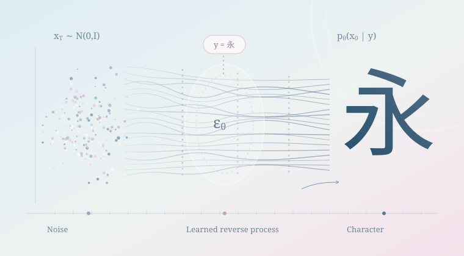

字生 · STATS 100A Honors · October 2026–present
字生 · Zìshēng
A small diffusion model that learns to turn Gaussian noise into Chinese character images. I wanted to make the reverse process something I could inspect, one sample at a time.
Try the model ↓- Status
- Working qualitative pilot
- Model
- Conditional U-Net · 0.88M parameters
- Data
- 3,072 images · 12 labels
Try 字生Choose a character and a seed; inspect the actual model states.
What I built
I implemented a compact conditional U-Net in PyTorch with learned character embeddings and sinusoidal timestep embeddings. It predicts the Gaussian noise added to a 48 × 48 image.
The pilot uses 3,072 synthetic print glyphs across 12 character labels and two Noto CJK font families, varying size, line weight, position, and rotation. Training used 8,000 AdamW updates and EMA weights.
The process
The forward marginal gradually removes image information: xₜ = √ᾱₜ x₀ + √(1 − ᾱₜ) ε, with ε ∼ N(0, I). The network learns εθ(xₜ, t, y), where y is the requested character.
At generation time, sampling starts from Gaussian noise. The learned noise estimate guides successive updates toward an image for that label. This is a pixel-based model; it does not generate pen trajectories or stroke order.
From the local pilot to this page
The original checkpoint-backed sampler runs a 1,000-step DDPM chain and streams 101 actual states, with seed controls and per-sample replay.
For the website, I exported the same 880,385-parameter model to ONNX. A worker runs the repository’s original 1,000-step DDPM update in the browser, including fresh Gaussian noise at each reverse step and 101 displayed states. Faster 60- and 100-step DDIM samplers are optional. Loading is optional and starts only when you press Generate.
What I want to test next
How much corruption can a model undo before it relies mainly on the character prior rather than the particular input? I’m also interested in whether spatial crowding and structural complexity change the model capacity needed to preserve character identity.
These are proposed directions, not findings. A useful next step is to define recognition and structural-fidelity measures, keep a font family out of training, and compare multiple seeds. The present 12 labels are uneven by stroke count, so they do not establish a stroke-complexity relationship.
Current status
A working qualitative pilot. The samples include recognizable and malformed glyphs; recognition accuracy and unseen-font generalization have not been measured.